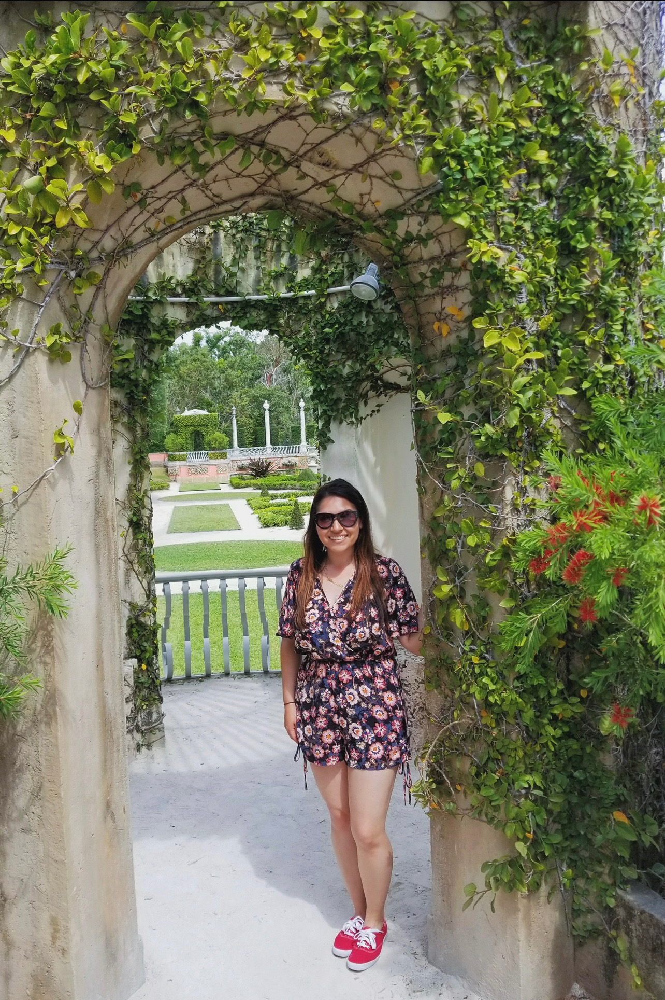
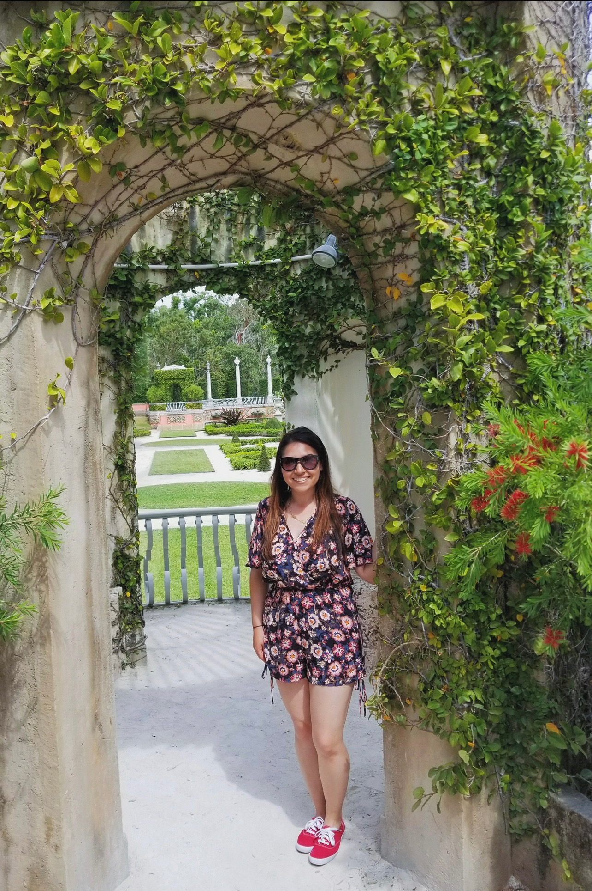
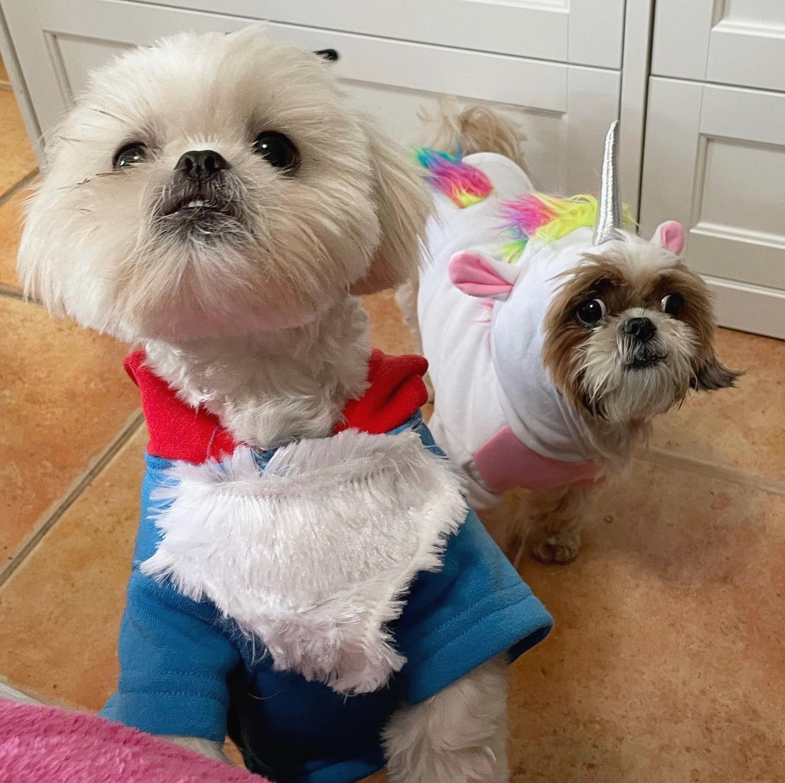
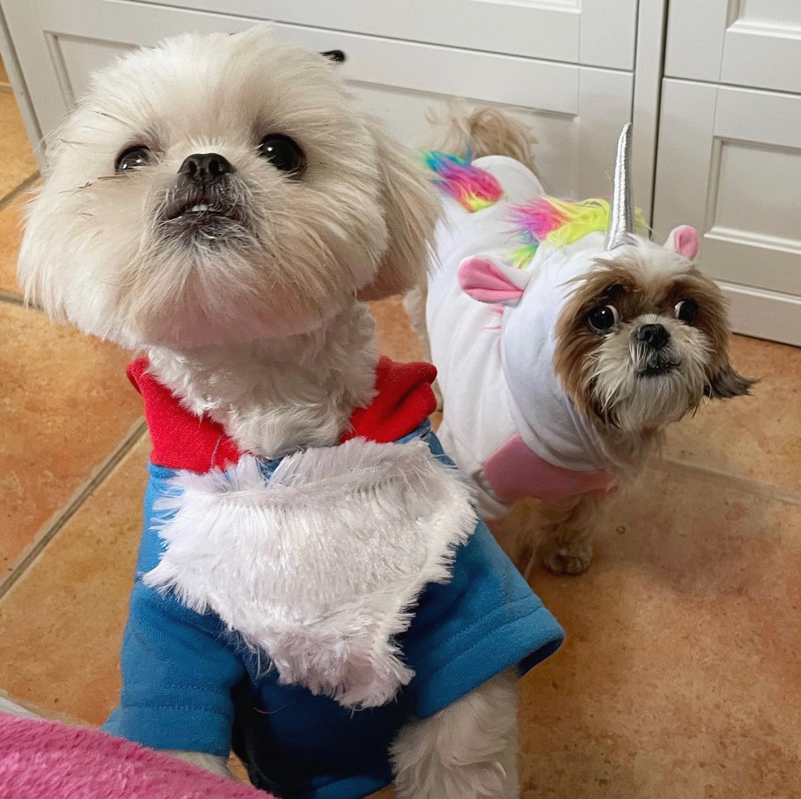

Welcome!
My name is Alexandra, but you can call me Alex. I was born and raised in Miami, Florida by two Nicaraguan parents and several older siblings. In college, I struggled when it came to picking a major. After several semesters of trial and error, I found the right fit for me. However, the education did not end there; in fact, the journey still continues. As a self-proclaimed lifelong-learner, this site is intended to show you that it is never too late to break out of your comfort zone and explore new interests.
When I'm not working or studying, I hop on planes and visit new countries. I keep it local sometimes and check out brunch places nearby. Most of all, I spend time with my husband and two shih tzu doggies, Bridget & Ruby.
If you browse my site, you will learn more about what I'm up to these days. You can see my professional history by clicking on the link below:
 

 
